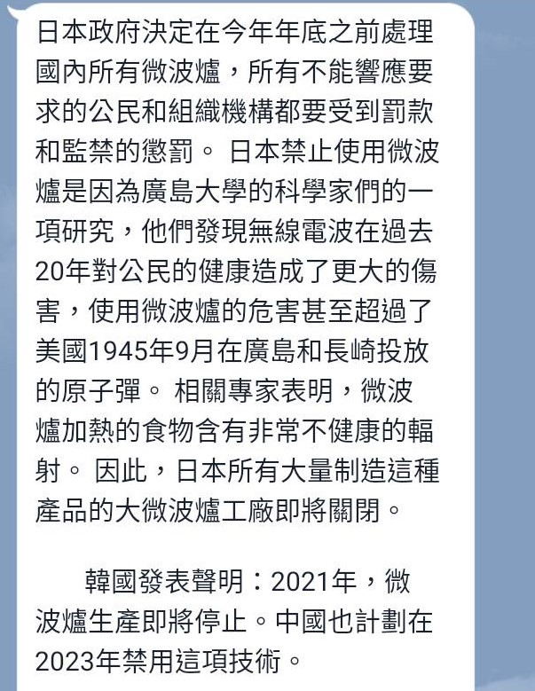
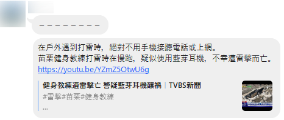

🔎 訊息查證小偵探
五年級上學期 · L05 Docs 查證文件（一）· 教學活動流程（40 分鐘）
🔗 已連線：老師公布答案時，這台會自動同步
📄 這兩節，你要做出這樣一份查證文件
老師先帶大家看一份成品：把一則網傳訊息查清楚，整理成 Google 文件。文件有 7 欄，今天先做前 4 欄，下一節做後 3 欄。
1 ‧ 我選的訊息
用自己的話說：這則訊息在講什麼
2 ‧ 我怎麼找到查核文章的
用了哪個關鍵詞、哪張圖
3 ‧ 查核結果
查核機構標了什麼？是哪一家？
4 ‧ 查核網址
查核文章的標題，做成可以點的連結
5 ‧ 為什麼這則訊息會被廣傳？
它讓人怕？好奇？還是關心家人？
6 ‧ 正確資訊
查核文章說的事實，用自己的話整理
7 ‧ 如果相信的話，會有什麼後果？
誰會怎樣？
今天（L05） 下一節（L06）
🤔 想一想
這份文件的 7 欄，你覺得哪一欄最難寫？為什麼？
💡 不用從零查證：今天要學的是找到別人已經查好的那一篇，再讀懂它。
👩🏫 老師示範：從訊息找到查核文章
還記得 L03 的橫向閱讀、L04 的查證網站和以圖搜圖嗎？把它們組合起來，就能找到別人已經查好的那一篇。看老師怎麼做：

網傳貼文擷圖（帳號已遮蔽）・點圖可放大
示範訊息：幫陌生人操作手機，會被盜走指紋？
訊息說：只要你摸螢幕、對著鏡頭說話，指紋、聲音和臉就會被偷走，騙子會拿去貸款，30 分鐘傾家蕩產。
你會信嗎？會轉傳嗎？先別急，我們來查。
① 圈出 2～3 個關鍵詞
不要整句貼去搜。挑人、事、物最重要的幾個詞。換你選選看（挑 2～3 個）：
② 加上「查核」去搜
關鍵詞＋查核。例：陌生人 操作手機 生物特徵 查核
③ 認出查核機構
網址是 tfc-taiwan.org.tw、mygopen.com，才是專門查謠言的。新聞、臉書貼文只是轉載。
④ 只讀兩個地方
標題前的標籤（錯誤、誤導…），和文章最上面的「你可以先知道」。
🖼️ 沒有好關鍵詞？改用以圖搜圖
訊息有圖片時，用智慧鏡頭或 Google 圖片的相機圖示；影片不能按右鍵，就先用 Win＋Shift＋S 截圖再搜（L04 學過）。
⚠️ 三條界線
- 搜尋結果最上面的 AI 摘要先跳過。它也會講結論，但你要讀的是查核機構寫的原始文章。
- 點到轉載站（新聞網站、貼文）時，要再點到原始的查核機構。
- 找不到時，換關鍵詞，或改用以圖搜圖，不要放棄，也不要自己亂猜結論。
👀 老師展開：示範的結果
🔎 MyGoPen：【誤導】幫陌生人操作手機會被盜取生物特徵去貸款？誇大 AI 技術！
🔎 台灣事實查核中心：錯誤。刑事局與 165 都說，台灣查不到這種案件。
💡 發現了嗎？兩個查核機構的結論一致，這樣更可信。
✋ 選一則你要查的訊息
下面 6 則都是真的在網路上流傳過的：有圖片、有影片。選一則，用今天學的方法查它。
查證難易度：星星越多越難查
★☆☆ 簡單：搜尋第一頁就找得到，結果很明確
★★☆ 中等：要多讀一點，或多換幾個關鍵詞
★★★ 較難：結果很細微，或要分辨轉載與原始查核機構
C ‧ 幫忙投票給繪畫比賽的小朋友
依網傳訊息重製（網址已隱藏）・點圖可放大
D ‧ 微波爐加熱的食物有輻射

網傳訊息擷圖・點圖可放大
E ‧ 打雷戴藍芽耳機會被雷擊

網傳訊息擷圖・點圖可放大
訊息提到的新聞影片（中視新聞）
G ‧ 印度街頭小吃加了水溝水
網傳的影片（原始版本）
H ‧ 充電時講電話不能喝水
網傳的影片（原始版本）。這支影片可以用「以圖搜圖」查
K ‧ 地震要躲在「生命三角」
網傳貼文擷圖（發文者已遮蔽）・點圖可放大
🔎 換你查：找到查核文章
你選的是：（還沒選，請回上一步）
🎯 今日任務：5 件事
- 1搜尋：關鍵詞＋查核，或以圖搜圖
- 2讀懂查核文章，在學習單記下結果和網址
- 3打開老師給的文件，貼上七個欄位
- 4設好標題 1、標題 2
- 5由上往下，寫好前 4 欄
1搜尋：關鍵詞＋查核
操作影片：從訊息找到查核文章（約 1 分鐘）
- 圈 2～3 個關鍵詞
- Google 打「關鍵詞＋查核」
- 點網址是 tfc-taiwan 或 mygopen 的文章
🖼️ 搜不到？換以圖搜圖
圖片：智慧鏡頭，或相機圖示貼上圖片
操作影片：以圖搜圖兩種方法（約 1 分 15 秒）
影片：Win＋Shift＋S 截圖，再搜
操作影片：截圖再以圖搜圖（L04，約 22 秒）
✏️ 我是怎麼找到的？（可複選）
2讀懂查核文章，記下結果和網址
- 看標題前的標籤（錯誤、誤導…）
- 讀最上面的「你可以先知道」
- 點網址列，Ctrl＋C，回來貼在下面
✏️ 查核機構標的結果是？
兩個機構結論一致，更可信。
📌 查核文章的分頁先不要關：下一步要從它複製圖片和標題。
✍️ 寫進你的 Google 文件
開文件、貼欄位、設標題，接著由上往下把前 4 欄寫完。你在上一步記下的答案，下面都幫你帶過來了。
🎯 今日任務：5 件事
- 1搜尋：關鍵詞＋查核，或以圖搜圖
- 2讀懂查核文章，在學習單記下結果和網址
- 3打開老師給的文件，貼上七個欄位
- 4設好標題 1、標題 2
- 5由上往下，寫好前 4 欄
3打開老師給的文件，貼上七個欄位
- Classroom 作業裡點老師給的文件
- 改檔名：年班座號＋名字
例：51230 王小明
⚠️ 一定要從 Classroom 作業裡開，老師才讀得到。
文件第一行 → Ctrl + Shift + V
＝「貼上但不套用格式設定」
💡 不用按儲存 按錯了？Ctrl + Z
4設好「標題 1」「標題 2」
左上角「內文」按鈕裡藏著樣式。用樣式設定，左邊的「大綱」才找得到每一段。
✋ 先猜猜看：只把「我選的訊息」改成 16 號大字，它會變成「標題 2」嗎？
🎉 答案是不會。只是字變大，「大綱」裡找不到它。用「樣式」選了標題 2，才算標題 2。
操作影片：貼上欄位、設定標題 1 與標題 2（約 40 秒）
- 第一行（題目）→ 標題 1
- 第二行（年班座號＋名字）→ 改成你自己的，不用設樣式
- 7 個欄位名稱 → 都改成 標題 2
- 快速鍵：選取後 Ctrl＋Alt＋1 或 2
多了空白、多一行？
👉 Backspace 刪前面 Delete 刪後面
複習影片（四上 L04）
5由上往下，寫好前 4 欄
① 我選的訊息
不要只抄標題。用自己的話寫一兩句，要說清楚人、事、時、地、物；下面貼上原始訊息的圖。
誰說的？說誰會怎樣？
發生什麼事？叫大家做什麼？
什麼時候？
在哪裡？
提到什麼東西？
訊息裡沒寫的，就寫「沒說」。
〔例〕網傳訊息說：路上（地）有陌生人（人）假裝不會用手機（物），請你幫忙操作（事）。只要你摸螢幕、對著鏡頭說話，你的指紋、聲音和臉就會被偷走，騙子會拿去貸款，30 分鐘（時）就讓你傾家蕩產。
操作影片：複製原始訊息的圖，貼進文件（約 15 秒）
- 到查核文章分頁，找到原始訊息的圖
- 圖上按右鍵 → 複製圖片
- 回文件，那一兩句下面 → Ctrl＋V
💡 你選的是影片？用 Win＋Shift＋S 截一張影片畫面，再 Ctrl＋V。
② 我怎麼找到查核文章的
不要只寫「關鍵字」或「搜圖」。照順序寫出你做了什麼：
- 我圈出哪幾個關鍵詞？（或用哪張圖搜圖）
- 我在 Google 搜了哪些字？有加「查核」嗎？
- 我點進哪一個網站的哪一篇？
- 我怎麼知道它是查核機構，不是轉載？
你在第 4 步記的：關鍵詞「」；方法「」
〔例〕我圈出關鍵詞「陌生人」「操作手機」「生物特徵」，在 Google 搜尋「幫陌生人操作手機 生物特徵 查核」，結果第 1 筆是 MyGoPen、第 3 筆是台灣事實查核中心，網址是 mygopen.com 和 tfc-taiwan.org.tw，是專門查謠言的機構，不是轉載，所以我點進這兩篇。
③ 查核結果
查核機構標了什麼結果？是哪一家？
你在第 4 步選的：
④ 查核網址
放上查核文章的標題，做成可以點的連結。
- 到查核文章分頁，選取標題，Ctrl＋C
- 回文件，貼在「查核網址」下面
- 按下面的「複製網址」
- 文件裡選取標題 → Ctrl＋K → Ctrl＋V → 套用
〔例〕MyGoPen：幫陌生人操作手機會被盜取生物特徵去貸款？誇大AI技術！不符金融審核機制
✅ 繳交前自己檢查
⚠️ Classroom 的作業先不要按「繳交」，下一節還要繼續寫完。
今天只要按下面的「繳交學習單」。
📮 繳交學習單
確定都填好了嗎？按下面按鈕交給老師（可以重交，會覆蓋前一次）。
made by 資訊老師黃博胤